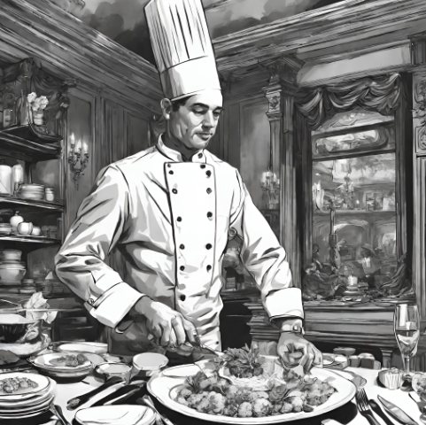

Waltzinfo@gmail.com
En el corazón ,de Nicaragua en la encantadora ciudad de Granada, se alzaba majestuoso Waltz Restaurant, un ícono de elegancia y sabor desde su fundación en 1995. Su fachada colonial, enmarcada por enredaderas florecientes, anunciaba la exquisitez que se encontraba dentro de sus puertas.
El restaurante era un tributo a la pasión por la gastronomía del chef Manuel Gómez y su esposa Isabela, quienes soñaron con crear un espacio donde la sofisticación se fusionara con los sabores tradicionales de Nicaragua. Inspirados por el vals, baile de armonía y gracia, bautizaron su restaurante como un homenaje a esa danza que evoca la belleza y la armonía en cada paso.
Los comensales cruzaban las puertas de caoba tallada y se sumergían en un mundo de refinamiento. El interior era una sinfonía de colores cálidos, luces tenues y música suave que acariciaba los sentidos. Las mesas vestidas con mantelería impecable y centros de flores frescas invitaban a los invitados a vivir una experiencia sensorial única.
El menú, cuidadosamente elaborado por el chef Manuel, ofrecía una fusión de ingredientes locales con técnicas culinarias internacionales. Platos emblemáticos como el "Filete a la Pimienta con Miel de Caña" o el "Ceviche de Mango con toque de Maracuyá" se convirtieron en deleites para los paladares más exigentes. La selección de vinos, tanto nacionales como internacionales, complementaba a la perfección cada plato, elevando la experiencia gastronómica a otro nivel.
Con el paso de los años, el Waltz Restaurant se convirtió en un punto de encuentro para celebraciones especiales, aniversarios y momentos memorables. Las parejas brindaban por su amor, empresarios cerraban tratos importantes y familias enteras disfrutaban de cenas que se convertían en recuerdos inolvidables.
Pero más allá de su excelencia culinaria, el restaurante se destacaba por su compromiso con la comunidad. Manuel y su esposa Isabela no solo ofrecían empleo a talentosos chefs y personal de servicio, sino que también colaboraban con programas de capacitación para jóvenes interesados en la gastronomía, dejando un legado más allá de sus puertas.
En la actualidad, Waltz Restaurant sigue siendo un referente de elegancia y exquisita cocina en Nicaragua. Su legado perdura en cada plato servido, en cada sonrisa de satisfacción de los comensales y en la huella dejada en la comunidad gastronómica del país.
Walter Solórzano.